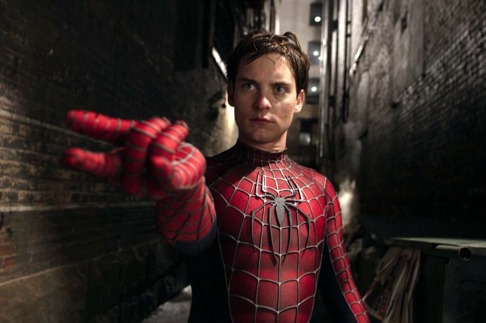
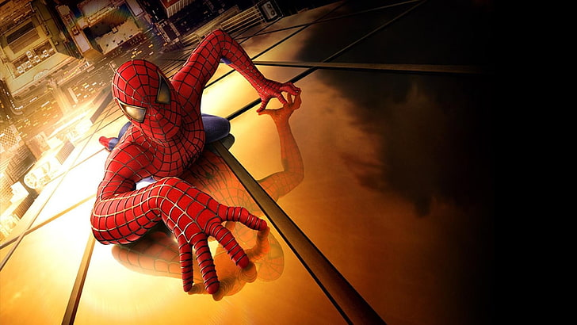
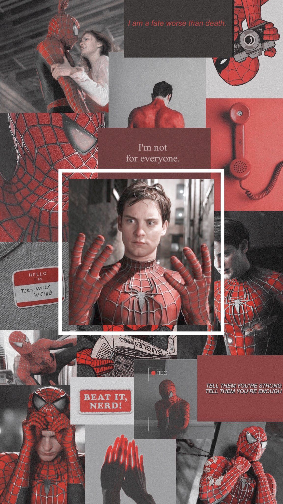

El Spiderman de Tobey se caracteriza por ser un Peter Parker inhibido, tímido e introvertido, pero bastante inteligente y capaz cuando se enfoca en algo que le parece importante. Tiene una buena relación con sus tíos (Ben y May Parker).
Un hecho fundamental que vive este Spiderman es el estrés postraumático luego de la muerte del Tío Ben, culpándose a si mismo por esta misma al haber podido evitar de forma indirecta su muerte, pero mostrando ese complejo de héroe que lo iba a caracterizar durante toda la saga, responsabilizándose y culpándose por el dolor que experimentan las personas a su alrededor creyéndose responsable del bienestar común como de un mesías se tratará.
Probablemente es el Peter Parker más agresivo de los 3, pero también es el más inhibido, esta agresividad parece desfogarse al ponerse la máscara de Spiderman combatiendo el Crimen. Cuando Peter se encuentra rodeado es cuando sale a relucir la gran frustración que trata de ocultar al mundo.
Por su conducta de represión Peter no puede superar eventos que pasaron hace ya tiempo, como la muerte del Tío Ben, la de Norman Osborn e incluso la de Harry. Parece tener miedo a las relaciones solidas al autosabotear constantemente su relacion con Mary Jane, justificando sus ausencias y faltas con su rol de Spiderman, es decir que para Tobey la mascara de Spiderman representa una forma evasiva de huir un medio que lo presiona y lo intimida constantemente, por eso es que cuando su vida fluye bien como le vemos en la 2 cinta parece no necesitar ser mas Spiderman y de forma asomatica comienza a perder sus habilidades poco a poco dado que si Peter tiene un buen trabajo, buenas calificaciones y una relacion de pareja estable no necesita una forma de escape o huida a la realidad como lo habia sido hasta ese momento lo que significaba Spiderman.
Al final entendemos que para este Peter su rol de Spiderman no es un simple rol, si no que al contrario esta podria ser su cara real y Peter Parker sería su verdadera mascara , dada que su trabajo como heroe no era solo una forma de honrar la memoria del Tio Ben ni una simple via para encontrar la afirmacion o autoridad y respeto que queria sentir por parte de su medio, si no que este era el medio donde por fin podría decidirse por completo, expresar sus emociones de alegria, rabia y triste, mientras que Peter era la cara que no podia sentir dolor o exigir lo que este realmente quería.
Peter Parker solo era su mascara para esconder su personalidad que es de un lider, exigente y con autoridad la cual solo salia a la luz al ser Spiderman.